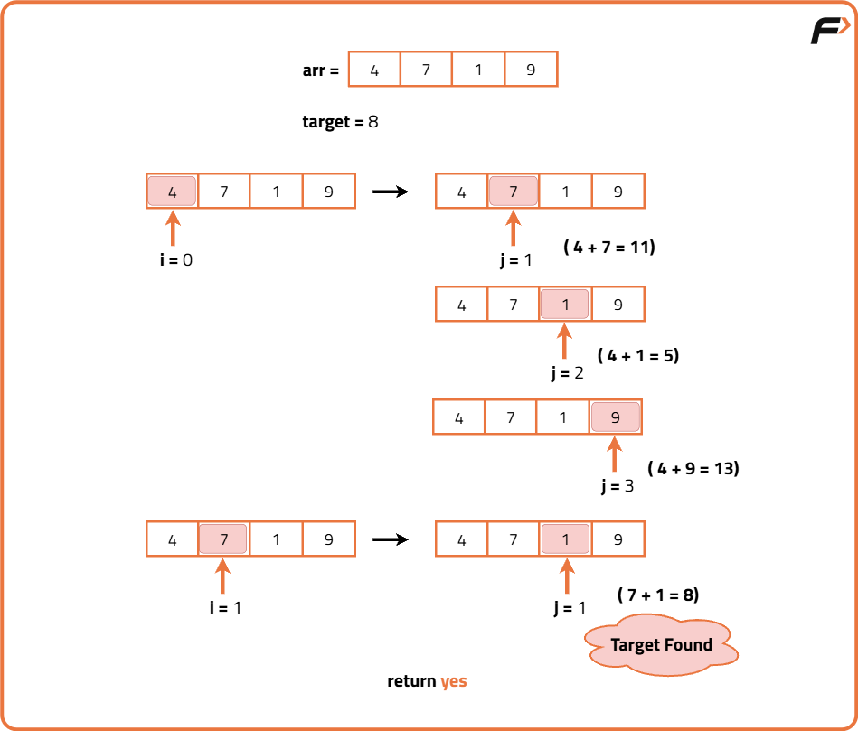
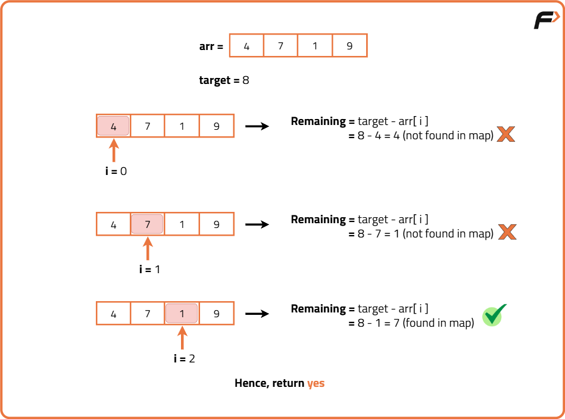
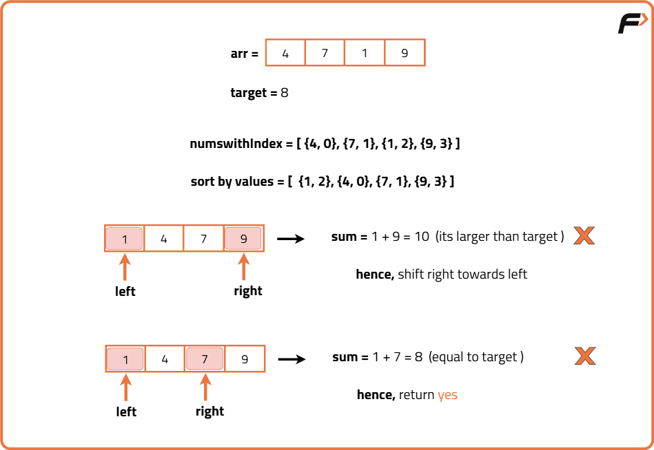

Two Sum : Check if a pair with given sum exists in Array
Problem Statement: Given an array of integers arr[] and an integer target.
1st variant: Return YES if there exist two numbers such that their sum is equal to the target. Otherwise, return NO.
2nd variant: Return indices of the two numbers such that their sum is equal to the target. Otherwise, we will return {-1, -1}.
Examples
Input: N = 5, arr[] = {2,6,5,8,11}, target = 14 Output : YES Explanation: arr[1] + arr[3] = 14. So, the answer is “YES” for first variant for second variant output will be : [1,3].
Input: N = 5, arr[] = {2,6,5,8,11}, target = 15 Output : NO. Explanation: There exist no such two numbers whose sum is equal to the target.
Disclaimer: Don’t jump directly to the solution, try it out yourself first.
Brute force Approach
Algorithm
- First, we will use a loop (say i) to select the indices of the array one by one.
- For every index i, we will traverse through the remaining array using another loop (say j) to find the other number such that the sum is equal to the target (i.e. arr[i] + arr[j] = target).
- Observation: In every iteration, if the inner loop starts from index 0, we will be checking the same pair of numbers multiple times. For example, in iteration 1, for i = 0, we will check for the pair arr[0] and arr[1]. Again in iteration 2, for i = 1, we will check arr[1] and arr[0]. So, to eliminate these same pairs, we will start the inner loop from i + 1.

Code
#include <bits/stdc++.h>
using namespace std;
class Solution {
public:
// Function to check if any two numbers sum up to target (variant 1)
string twoSumExists(vector<int>& arr, int target) {
int n = arr.size();
// Outer loop picks one element at a time
for (int i = 0; i < n; i++) {
// Inner loop searches for another element that complements arr[i]
for (int j = i + 1; j < n; j++) {
// If sum equals target, return "YES"
if (arr[i] + arr[j] == target) {
return "YES";
}
}
}
// No pair found that sums to target
return "NO";
}
// Function to return indices of two numbers that sum to target (variant 2)
vector<int> twoSumIndices(vector<int>& arr, int target) {
int n = arr.size();
// Outer loop picks one element at a time
for (int i = 0; i < n; i++) {
// Inner loop searches for another element that complements arr[i]
for (int j = i + 1; j < n; j++) {
// If sum equals target, return the pair of indices
if (arr[i] + arr[j] == target) {
return {i, j};
}
}
}
// No such pair found
return {-1, -1};
}
};
int main() {
Solution sol;
vector<int> arr = {2, 6, 5, 8, 11};
int target = 14;
// Variant 1
cout << sol.twoSumExists(arr, target) << "\n";
// Variant 2
vector<int> res = sol.twoSumIndices(arr, target);
cout << "[" << res[0] << ", " << res[1] << "]\n";
return 0;
}
Complexity Analysis
Time Complexity: O(N²) because we use two nested loops to check every possible pair of elements in the array, where N is the size of the array.
Space Complexity: O(1) as we use a constant amount of extra space regardless of input size.
Better Approach
Algorithm
And for the second variant, we will store the element along with its index in the HashMap. Thus we can easily retrieve the index of the other element i.e. target (selected element) without iterating the array.
- We will select the element of the array one by one using a loop (say i).
- Then we will check if the other required element (i.e. target - arr[i]) exists in the HashMap.
- If that element exists, then we will return “YES” for the first variant or we will return the current index i.e. i, and the index of the element found using map i.e. mp[target - arr[i]].
- If that element does not exist, then we will just store the current element in the HashMap along with its index. Because in the future, the current element might be a part of our answer.
- Finally, if we are out of the loop, that means there is no such pair whose sum is equal to the target. In this case, we will return either “NO” or {-1, -1} as per the variant of the question.

Code
#include <bits/stdc++.h>
using namespace std;
class Solution {
public:
// Variant 1: Check if two numbers sum to target using hashing
string twoSumExists(vector<int>& arr, int target) {
unordered_map<int, int> mp; // Map to store element -> index
int n = arr.size();
// Iterate over all elements
for (int i = 0; i < n; i++) {
int complement = target - arr[i]; // Needed value to reach target sum
// Check if complement is already in map
if (mp.find(complement) != mp.end()) {
return "YES"; // Pair found
}
// Store current element with its index for future reference
mp[arr[i]] = i;
}
// No pair found
return "NO";
}
// Variant 2: Return indices of two numbers that sum to target using hashing
vector<int> twoSumIndices(vector<int>& arr, int target) {
unordered_map<int, int> mp; // Map to store element -> index
int n = arr.size();
for (int i = 0; i < n; i++) {
int complement = target - arr[i];
// If complement found, return indices
if (mp.find(complement) != mp.end()) {
return {mp[complement], i};
}
// Store current element and index
mp[arr[i]] = i;
}
return {-1, -1}; // No pair found
}
};
int main() {
Solution sol;
vector<int> arr = {2, 6, 5, 8, 11};
int target = 14;
cout << sol.twoSumExists(arr, target) << "\n";
vector<int> res = sol.twoSumIndices(arr, target);
cout << "[" << res[0] << ", " << res[1] << "]\n";
return 0;
}
Complexity Analysis
Time Complexity: O(N) because we traverse the array only once, and each lookup or insertion in the hash map takes O(1) on average, where N is the size of the array.
Space Complexity: O(N) since in the worst case we may store all elements of the array in the hash map.
Optimal Approach
Algorithm
We will keep a left pointer at the first index and a right pointer at the last index. Now until left < right, we will check the sum of arr[left] and arr[right]. Now if the sum < target, we need bigger numbers and so we will increment the left pointer. But if sum > target, we need to consider lesser numbers and so we will decrement the right pointer.
If sum == target we will return either “YES” or the indices as per the question. But if the left crosses the right pointer, we will return “NO” or {-1, -1}.
- We will sort the given array first.
- Now, we will take two pointers i.e. left, which points to the first index, and right, which points to the last index.
- Now using a loop we will check the sum of arr[left] and arr[right] until left < right.
- If arr[left] + arr[right] > sum, we will decrement the right pointer.
- If arr[left] + arr[right] < sum, we will increment the left pointer.
- If arr[left] + arr[right] == sum, we will return the result.
- Finally, if no results are found we will return “NO” or {-1, -1}.

Code
#include <bits/stdc++.h>
using namespace std;
class Solution {
public:
// Variant 1: Check if two numbers sum to target using two-pointer approach
string twoSumExists(vector<int> arr, int target) {
int n = arr.size();
// Create a vector of pairs to remember original indices after sorting
vector<pair<int, int>> numsWithIndex;
for (int i = 0; i < n; i++) {
numsWithIndex.push_back({arr[i], i});
}
// Sort based on the element values
sort(numsWithIndex.begin(), numsWithIndex.end());
int left = 0, right = n - 1;
// Loop until pointers cross
while (left < right) {
int sum = numsWithIndex[left].first + numsWithIndex[right].first;
if (sum == target) {
return "YES"; // Pair found
} else if (sum < target) {
left++; // Need bigger sum, move left pointer right
} else {
right--; // Need smaller sum, move right pointer left
}
}
return "NO"; // No pair found
}
// Variant 2: Return original indices of two numbers that sum to target
vector<int> twoSumIndices(vector<int> arr, int target) {
int n = arr.size();
vector<pair<int, int>> numsWithIndex;
for (int i = 0; i < n; i++) {
numsWithIndex.push_back({arr[i], i});
}
sort(numsWithIndex.begin(), numsWithIndex.end());
int left = 0, right = n - 1;
while (left < right) {
int sum = numsWithIndex[left].first + numsWithIndex[right].first;
if (sum == target) {
// Return original indices
return {numsWithIndex[left].second, numsWithIndex[right].second};
} else if (sum < target) {
left++;
} else {
right--;
}
}
return {-1, -1}; // No pair found
}
};
int main() {
Solution sol;
vector<int> arr = {2, 6, 5, 8, 11};
int target = 14;
cout << sol.twoSumExists(arr, target) << "\n";
vector<int> res = sol.twoSumIndices(arr, target);
cout << "[" << res[0] << ", " << res[1] << "]\n";
return 0;
}
Complexity Analysis
Time Complexity: O(N log N) due to sorting the array initially, where N is the number of elements. The two-pointer traversal runs in O(N).
Space Complexity: O(N) because we store the array elements along with their original indices in a separate list or vector for sorting, maintaining original positions.